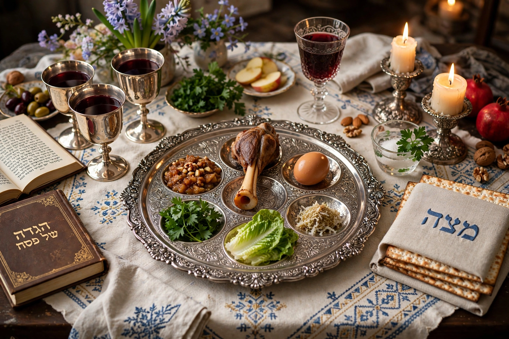

Passover
| Passover | |
| Hebrew | פֶּסַח (Pesach) |
|---|---|
| Observed by | Jews |
| Date | 15–22 Nisan (15–21 in Israel) |
| Celebrations | Passover Seder, eating matzah |

Passover, or Pesach, is a major Jewish holiday commemorating the Exodus of the Israelites from slavery in ancient Egypt. It begins on the 15th day of the Hebrew month of Nisan and lasts seven days in Israel and eight days in the Diaspora.
The Seder
On the first night (first two nights in the Diaspora), families gather for the Seder, a ritual meal at which the Haggadah — the story of the Exodus — is retold. The Seder plate holds symbolic foods: maror (bitter herb) for the bitterness of slavery, charoset for the mortar of the slaves, a shank bone recalling the paschal lamb, and an egg symbolising renewal. Four cups of wine are drunk, and the youngest child asks the Four Questions.
Matzah and chametz
Throughout the festival, leavened food (chametz) is avoided in memory of the haste of the Exodus, when there was no time for bread to rise. Instead, unleavened matzah is eaten. The name "Passover" refers to the tenth plague, in which the homes of the Israelites were "passed over".
See also: The Exodus, Haggadah.